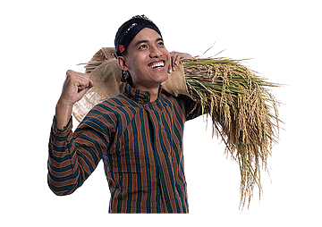

Petani maju
dengan Petaninfo
Petaninfo adalah sebuah website yang dapat membantu Dalam dunia pertanian. Website ini hadir sebagai terobosan dalam mewujudkan smart farm. Website adalah sesuatu hal yang penting. ditambah dengan revolusi industri 4.0 informasi akam cepat menyebar. petaniinfo adalah situs yang berisi fitur penting bagi keberhasilan dalam dunia pertanian. informasi pasar, teknik terbaru, peramalan cuaca, berita perrtanian, dll.
Dengan petaninfo, petani akan dapat membeli pupuk dengan harga yang relative murah karena mereka akan dihubungkan dengan pabriknya langsung. petani juga dapat bertanya seputar masalah pertanian. sehingga petani mendapatkan arahan yang akurat dalam mengambil jalan suatu solusi terhadap pertanian.